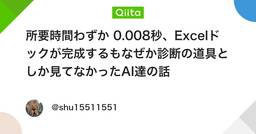
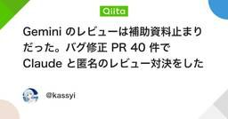
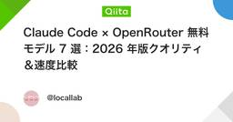

AIタグが付けられた新着記事 - Qiita
https://qiita.com/tags/ai
AIは、「Artificial Intelligence（人工知能）」の略で、人間のような知的な活動（学習、推論、問題解決、理解など）をコンピューターに実現させる技術や、その研究分野全体を指します。コンピューターがまるで人間のように見える振る舞い（学習や判断）を可能にするための技術です。AIの代表的な分野AIは非常に広範な概念であり、その技術は日々進化しています。機械学習（Machine Learning）データから学習し、予測や分類を行う技術ディープラーニング（Deep Learning）機械学習の一種で、多層のニューラルネットワークを用いることで、より複雑なパターンを学習できる技術自然言語処理（Natural Language Processing、NLP）人間の言葉をコンピューターが理解し、処理する技術画像認識（Image Recognition）画像内の物体や人物、パターンなどを識別する技術ロボティクス（Robotics）ロボットの設計、製造、運用に関わる技術リファレンスWikipedia: 人工知能 - Wikipedia関連タグLLM生成AIOpenAIAnthropic
フィード

所要時間わずか 0.008秒、Excelドックが完成するもなぜか診断の道具としか見てなかったAI達の話
AIタグが付けられた新着記事 - Qiita
はじめに ―― 威勢よくぶち上げたものの、現実は甘くなかった前回の記事で、世界中を賑わせているリバースエンジニアリングMCP「REA」の解剖思想に衝撃を受け、エクセルのシート全体を骨と病巣まで丸裸にする**『Excelドック構想』**を高らかに宣言しました。話題の世...
1時間前
Xのいいねとリポストを、AIブラウザで整理
AIタグが付けられた新着記事 - Qiita
Xで「いいね」したものを、あとから見返すことがほとんどない。気づけばいいねが数百件たまっていて、何に反応していたのか自分でも分からない。そこで「1週間に1回、自分のいいねとリポストを整理して、今週の関心の変化を眺める」仕組みが作れないかと考えた。結論から言うと、AIエージ...
1時間前

Gemini のレビューは補助資料止まりだった。バグ修正 PR 40 件で Claude と匿名のレビュー対決をした（全 3 回）
AIタグが付けられた新着記事 - Qiita
シリーズ「Gemini と Claude を自分のコードで比べる」（全 3 回）「Claude のほうがコードを読める」は本当か？重複検知ベンチマークで比べたGemini を主力エージェントから外して、Claude に移ったGemini のレビューは補助資料止ま...
2時間前

Claude Code × OpenRouter 無料モデル 7 選：2026 年版クオリティ＆速度比較
AIタグが付けられた新着記事 - Qiita
TL;DROpenRouter の :free モデルは 2026 年時点で 7 モデル以上が実用レベルに達しているコーディング補助・ドキュメント生成・レビューで GPT-4o 相当のアウトプットをゼロコストで得られるモデルが存在するモデルごとに「得意タスク」が明...
2時間前